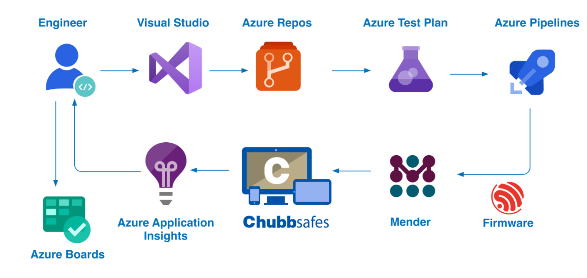

Project Overview
During my internship at Lennox International, I developed an automated firmware testing and release pipeline
for thermostats and control boards. This project significantly improved the development workflow and
reduced manual testing overhead.
Key Responsibilities
- Automated firmware testing and release pipelines for thermostats & control boards
- Saved 15+ hours weekly through automation
- Built a GUI tool with local LLM-powered chatbot integration
- Developed pipeline triggering mechanisms
- Generated automated release notes and wiki documentation
- Implemented user query answering system
- Added OTA (Over-The-Air) update capabilities
- Implemented timeout detection and multi-session support
- Increased pipeline reliability and efficiency
Technical Achievements
- Developed comprehensive automation framework that reduced manual effort by 15+ hours per week
- Created intelligent chatbot interface for developer productivity enhancement
- Implemented robust error handling and timeout mechanisms
- Built scalable pipeline architecture supporting multiple concurrent sessions
- Integrated OTA update functionality for seamless firmware deployment
Technologies Used
Python
GUI Development
LLM Integration
Automation Pipelines
Firmware Testing
OTA Updates
CI/CD
Confidentiality Notice
Note: This project was completed as part of my internship with Lennox International.
Due to confidentiality agreements and proprietary nature of the work, I am unable to share the
source code or detailed technical specifications. The information provided here represents
the general scope and impact of my contributions to the project.